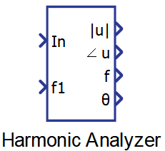
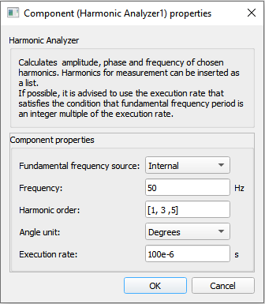
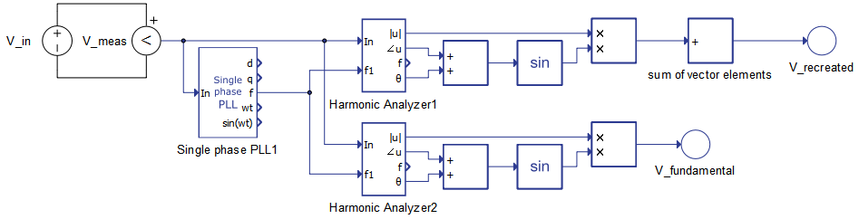
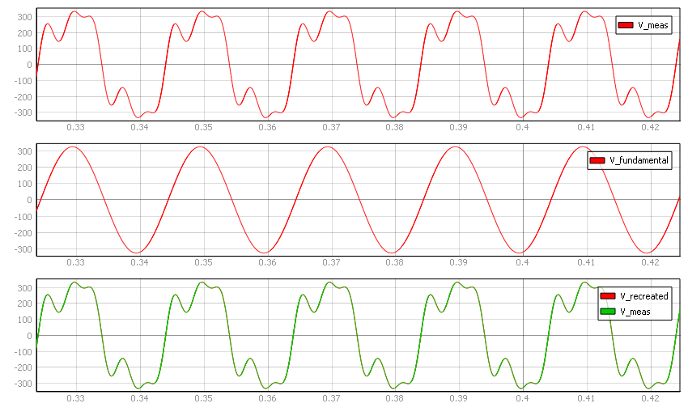

Harmonic Analyzer
Description of the Harmonic Analyzer component in Schematic Editor, which calculates amplitude, phase and frequency for the specified harmonics.
Component Icon

Description
The Harmonic Analyzer block calculates amplitude, phase and frequency for the specified harmonic.
The frequency of the fundamental harmonic can be a fixed value defined as property value, or it can be fed to the component through f1 input.
The real and imaginary part of the phasor, for a specified harmonic, are calculated using Discrete Fourier Transform coefficients:
where h and N represent the order of the specified harmonic and the number of samples, respectively. The number of samples is calculated as the ratio between the period of the signal and the execution rate.
The amplitude and phase outputs can be obtained easily after that:
The frequency value of the harmonic is simply calculated based on the fundamental frequency, and the harmonic order:
f = ffund * h.
Ports
- In (in)
- Input signal.
- Supported types: real
- Vector support: no
- Input signal.
- f1 (in)
- Frequency of the fundamental harmonic of the input signal. This port is
visible only if the Fundamental frequency source property value is
set to External.
- Supported types: real
- Vector support: no
- Frequency of the fundamental harmonic of the input signal. This port is
visible only if the Fundamental frequency source property value is
set to External.
- |u| (out)
- Amplitude of the input signal.
- Supported types: real
- Vector support: yes
- The output dimension depends on the Harmonic order value. If this property is set as a list, the output will be a vector with an order equal to the order of the list set in this property
- Amplitude of the input signal.
- ∠u (out)
- Phase of the input signal.
- Supported types: real
- Vector support: yes
- The output dimension depends on the Harmonic order value. If this property is set as a list, the output will be a vector with an order equal to the order of the list set in this property
- Phase of the input signal.
- f (out)
- Frequency value of the harmonic.
- Supported types: real
- Vector support: yes
- The output dimension depends on the Harmonic order value. If this property is set as a list, the output will be a vector with an order equal to the order of the list set in this property.
- Frequency value of the harmonic.
- θ
- Reference angle for the calculated phase value of the input signal. This
output can be used in order to recreate the input signal using only the
harmonics chosen in the Harmonic order property (see Signal recreation example).
- Supported types: real
- Vector support: yes
- The output dimension depends on the Harmonic order value. If this property is set as a list, the output will be a vector with an order equal to the order of the list set in this property.
- Reference angle for the calculated phase value of the input signal. This
output can be used in order to recreate the input signal using only the
harmonics chosen in the Harmonic order property (see Signal recreation example).
Properties

- Fundamental frequency source
- Frequency
- Type in the frequency of the fundamental harmonic. This property is visible only if the Fundamental frequency source value is set to Internal.
- Harmonic order
- Type in the harmonics order value, or a list of values that should be measured.
- Execution rate
- Type in the desired signal processing execution rate. This value
must be compatible with other signal processing components of the same circuit: the value must
be a multiple of the fastest execution rate in the circuit. There can be up to four different
execution rates. To specify the execution rate, you can use either decimal (e.g. 0.001) or
exponential values (e.g. 1e-3) in seconds. Alternatively, you can type in ‘inherit’ in which
case the component will be assigned execution rate based on the execution rate of the components
it is receiving input from.
The input signal is sampled with this execution rate. Results of the Harmonic analyzer will be more precise if the period of the fundamental harmonic of the signal is divisible by this execution rate (the ratio is an integer number).
- Type in the desired signal processing execution rate. This value
must be compatible with other signal processing components of the same circuit: the value must
be a multiple of the fastest execution rate in the circuit. There can be up to four different
execution rates. To specify the execution rate, you can use either decimal (e.g. 0.001) or
exponential values (e.g. 1e-3) in seconds. Alternatively, you can type in ‘inherit’ in which
case the component will be assigned execution rate based on the execution rate of the components
it is receiving input from.
Signal recreation example
This section will demonstrate how the Harmonic Analyzer component can be used to extract the exact waveforms of certain harmonics of an input signal. The schematic diagram that can provide this functionality is shown in Figure 2.

Input signal voltage is measured and provided to the Single Phase PLL component in order to acquire the fundamental frequency of the signal. Through HIL SCADA third and fifth harmonics are included in input signal. The first Harmonic Analyzer component, named Harmonic Analyzer1, is configured to extract the first, the third and the fifth harmonic, whereas the second one, named Harmonic Analyzer2, is configured to extract only the fundamental harmonic. With both of these components, the harmonic angle is added to the reference angle in order to acquire the input value for the sine calculation. Sine values are multiplied by the amplitude value. In case of vectorized signals, the Sum block sums the vector elements in order to recreate the chosen harmonics of the input signal.
Figure 3 shows the waveforms of signals of interest. It can be seen that recreation is correct in the first case in which all of the present harmonics are chosen for extraction. Meanwhile, V_fundamental is the waveform of the fundamental harmonic only, since the corresponding Harmonic Analyzer component is configured to extract only the fundamental frequency harmonic.
